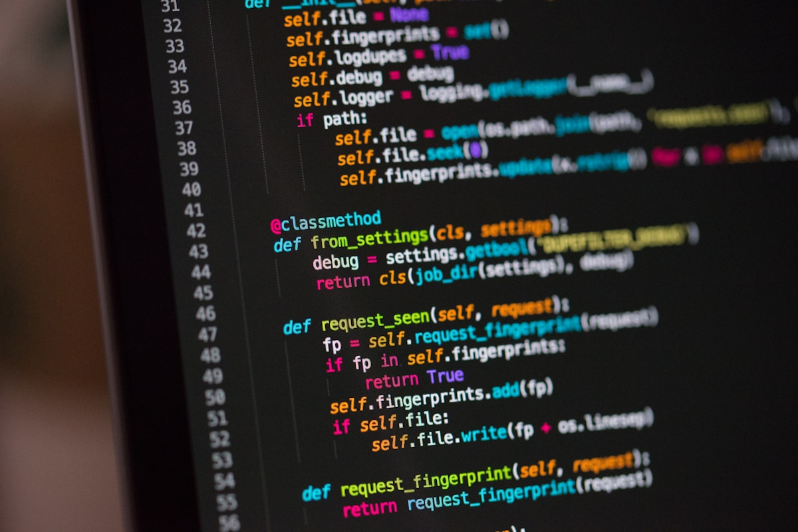

Clarity before decoration
Interfaces should look refined, but the structure has to be instantly understandable.
QA Analyst & Full Stack Developer
Hi, I’m Tasos. I combine a quality-first mindset with hands-on full stack development to create clean, accessible and dependable digital products.
Working Philosophy
My work is shaped by a quality-first mindset: I look for weak points early, keep interfaces clear, and turn ideas into digital products that feel considered instead of rushed.
The sweet spot is where precise testing meets hands-on development. That balance helps me think like a user, work like an engineer and polish like a designer.
Interfaces should look refined, but the structure has to be instantly understandable.
I approach every screen with the eye of someone who expects edge cases, not just happy paths.
Good work should feel calm, intentional and durable, even when the technology underneath is complex.
 01
01
My skillset showcases a blend of technical expertise and creative problem-solving.
Explore Skills
02My work experience reflects a professional journey marked by diverse roles and significant achievements.
View Experience 03
03
My projects illustrate practical applications of innovative ideas and rigorous execution.
View Projects